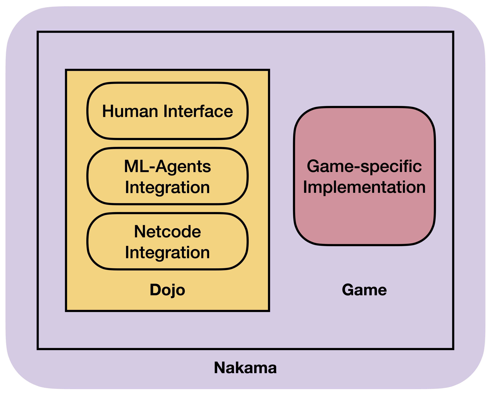

Dojo Design
On this page, you will find a comprehensive explanation of the design pattern utilized by Dojo.
Folder Structure
When working with the Dojo repository, it's important to focus on two key folders: Nakama, and Unity.
Nakamafolder is where you'll find the Docker file and Nakama module implementations.Unityfolder is the core of theDojopackage, as it contains both the package itself and example games. It is also the folder that will be opened by Unity editor.
Unity Folder
The code inside the Unity folder is split into two parts: the Dojo package code and the example games code.
Unity/Assets/Dojohas all the code implementation forDojopackage.Unity/Assets/Examplescontains all the example game implementations.
Dojo Package
Dojo package has following layout:
Agent/
Editor/
Mujoco/
Nakama/
Netcode/
Plugins/
Recording/
UI/
Dispatcher.cs
DojoConnection.cs
DojoMessage.cs
DojoNetworkRole.cs
Agentfolder provide code for Unity ml-agents integration.Editorhas code that only runs in Unity editor, such as game builder scripts.Mujococontains the integration code for Mujoco physics engine.Nakamaintegrates the Nakama multiplayer framework.Netcodeintegrates the Unity Netcode for GameObjects.Pluginscontains system-specific binary files that are used inDojo.Recordingprovides code for recording game play information.UIimplements the user interface for human players and viewers.
Finally, DojoConnection.cs is the script responsible for orchestrating the package and ensuring smooth operation by connecting all its components.
Dojo Examples
The example games follow a specific folder structure pattern:
- The parent folder is the name of the game.
Actionscontains all the keyboard/mouse action maps.Configshas the configuration files used for this game.Materialshas the shader/physics materials used in game.Prefabscontains the prefabs in Unity.Scenesis where the scene files locate.Scriptscontains all the code in the game.Shadershas custom shader implementations.Texturescontains any image textures used in the game.UIBuilderhas any custom user interface configuration for this game.
In conclusion, open a game scene by navigating to the Scenes folder.
Dojo Components
A standard Dojo game is composed of the following elements:

The game is based on the Nakama framework and incorporates the Dojo Nakama integration. Additionally, it employs a human interface for human interactions, utilizes ml-agents integration for communicating with the Algorithms code, and integrates netcode for game state synchronization.